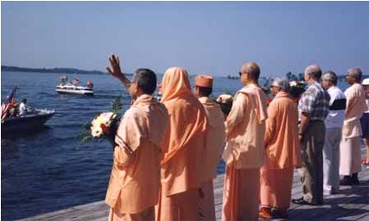
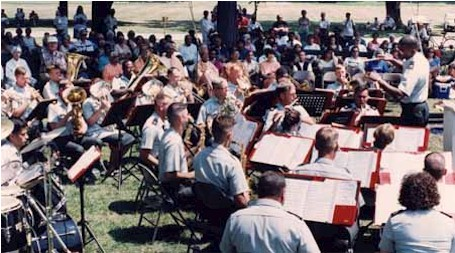
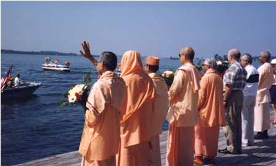
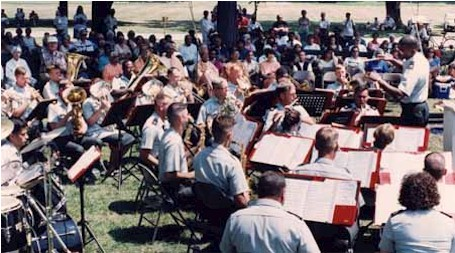
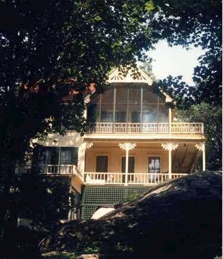
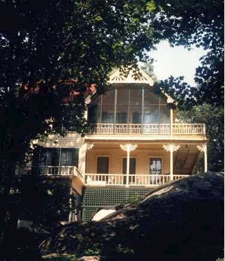

Ramakrishna-Vivekenanda Center of New York
Image Gallery
Centenary of Swami Vivekananda at Thousand Island Park, NY
July 21-23, 1995
 




 

On July 21-23, 1995, the Center held a celebration at Thousand Island Park to commemorate the Centenary of Swami Vivekananda's historic visit there in 1895. The celebration was observed jointly by the Ramakrishna-Vivekananda Center of New York, the Thousand Island Park Corporation, Tabernacle Committee, Landmark Society, and other organizations of the Park. Participating in the programs were Swamis of the Ramakrishna Order from India, Europe, Canada and America; religious leaders of different faiths; scholars; community leaders, and well-known musical artists. The main events of the Vivekananda Weekend were: an Interfaith Service, the Centennial Blessing of the Thousand Islands, a concert by the United States Army Band of Fort Drum,NY, and a town meeting.
Participating in the Service were the visiting Swamis, religious leaders of different faiths and musical artists. All of the events were widely reported on by the television stations and newspapers of the region. Especially noteworthy is the beautifully presented article in The Watertown Daily Times, referring to Swami Vivekananda as "The Swami of the St. Lawrence"